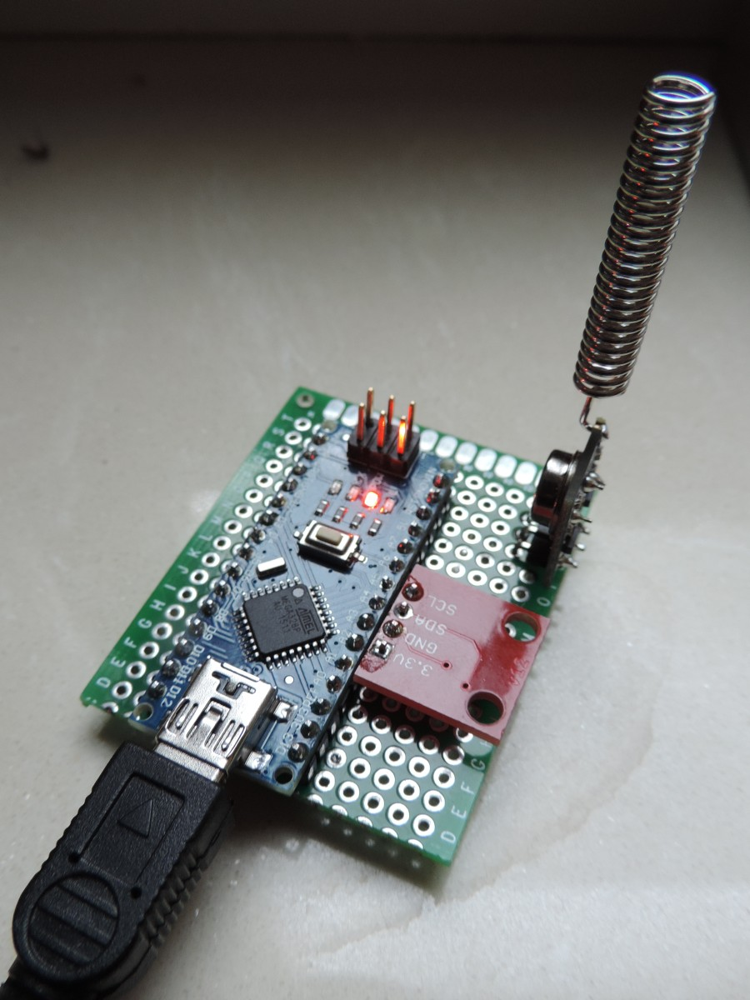
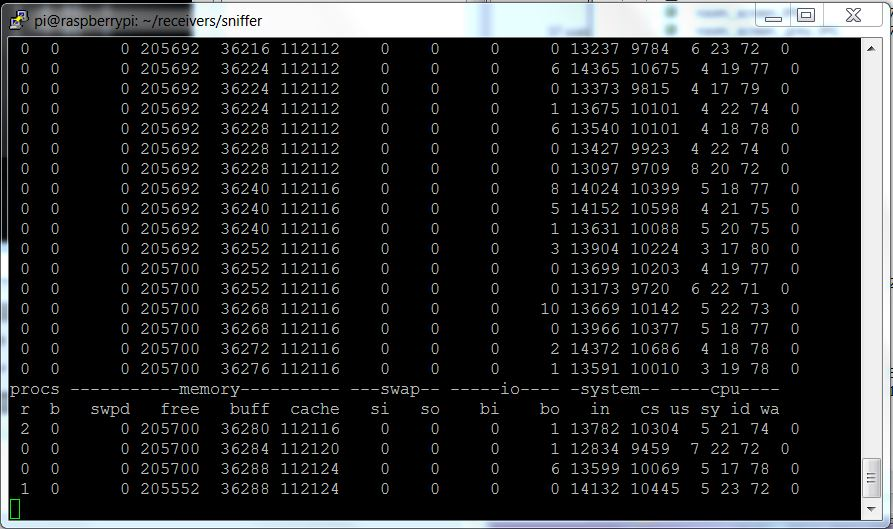
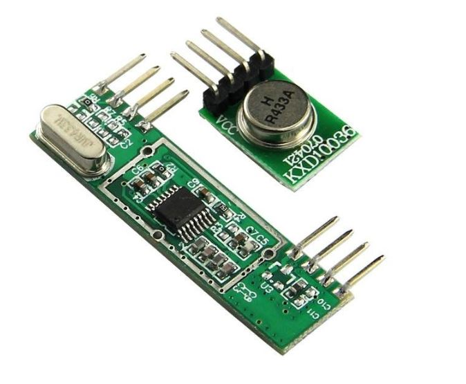
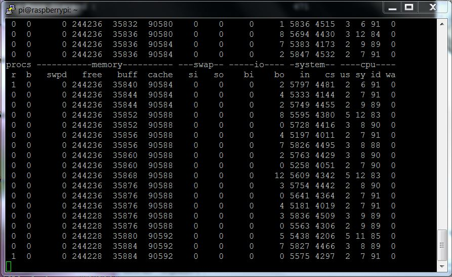
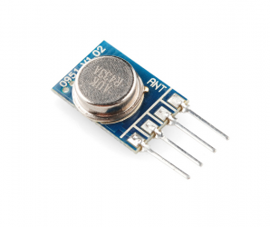
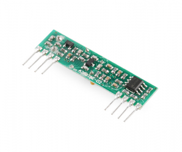
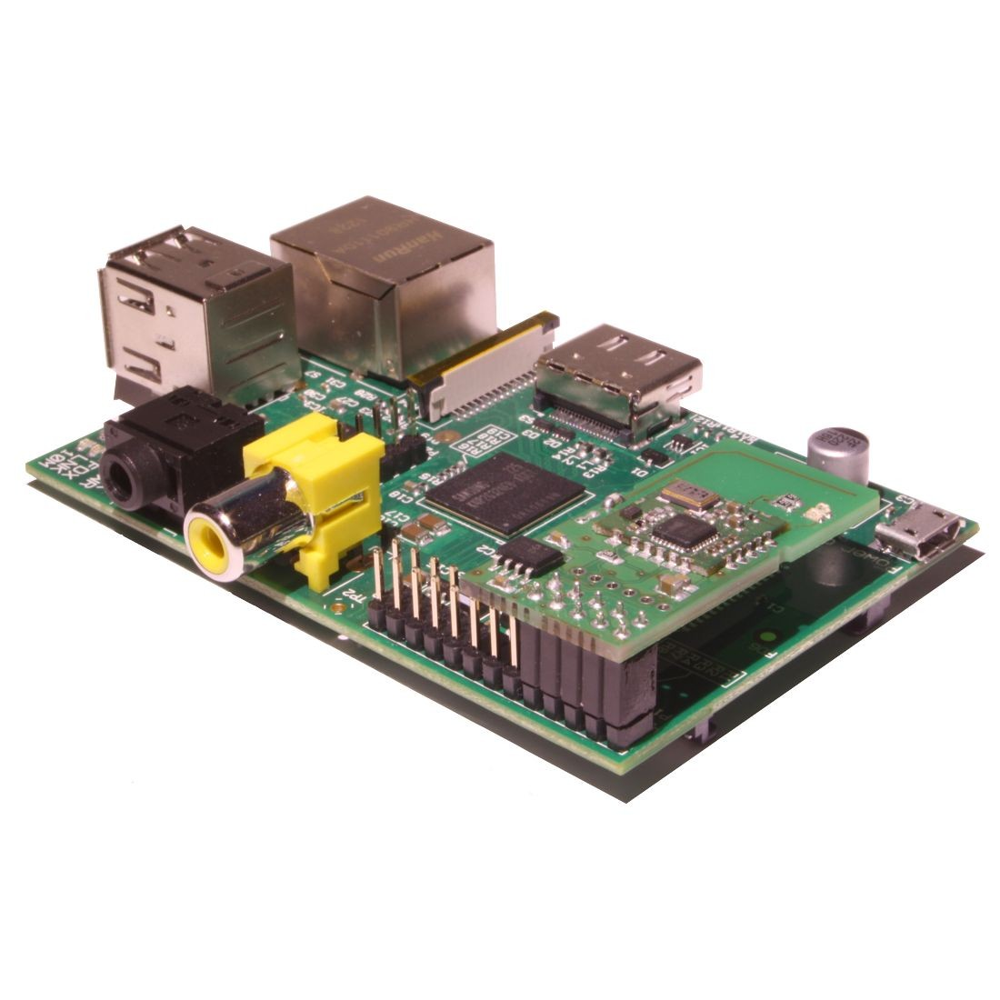

This page deals with the hardware that we need to connect to the Raspberry PI in order to communicatie with 433MHz receivers or Handsets and turn your RPI into a full functioning control center. LamPI can support receiver devices (making transmitter modules for various brands is often easy). Also, several brand share almost the same protocol or work or can be made to work with minor modifications, Therefore, the list below is probably just a snapshot of a much larger list...
It is difficutl to catagorize devices or protocols or any other in such a way that it is easy to understand how you can interface with devices and sensors as this can be done by a direct (wired) connection to the Raspberry, over Wifi, 433MHz, Z-Wave or Zigbee. In principle every tye of switch and dimmer or eney type of device should be able to talk to the LamPI daemon some way or another.
Th eemainder of thsi document will be structures so that we will discuss wired connections to the Raspberry first, followed by devices/sensors that connect over 433MHz (keep in mind that these devices use some sort of transceiver or gateway connected to the Raspberry too).
By connecting transmitter, receiver and/or sensors directly to the Raspberry, it is possible to control a great deal of devices and/or sensors. The Raspberry has 26 or 40 pins and a lot of these pins are GPIO pins and can be used to transmit or receive pulses. If connections were the only important thing here, than the Raspberry could be extended to talk to almost every device you like it to connect with.
The most simple cofiguraton is the transmitter on the picture: It uses only 3 pins: Vcc (black), Gnd (red) and a data line (yellow). Yes, I know red would be the better color for Vcc, but unfortunately the connector had its wires fixed in the wrong order :-) Later versions of the Raspberry gpio devices I made use more pin's and can receive over-the-air messages and measure temperature etc. There are all explained in separate sections.
So how can the Raspberry "talk" to all these devices:
All combinations are valid and can work.

Instead of connecting a transmitter and receiver directly to the Raspberry, it is also possible to use a Arduino gateway. In this case, the Arduino will take care of all the 433 MHz wireless communication and it will connect to the Raspberry through a USB cable and port for power and host communication. For first version of the Arduino Gateway the UNO (larger footprint) and the Nano were the best candidates. In a later states we might have a look at other Arduino variants such as Nanodes, Teensy, Arduino RFu etc. if there are important advantages in using them.
I also made a version of the Arduino Gateway based on the Arduino Uno. The Uno is somewhat larger and in combination with the Arduino stick-up board Prototype Shield and a small block it is easy to make and change a setup. Functionally, the Nano and the Uno are equivalent and the code runs on both systems.So it is a matter of choice and preference.
In the picture above you see the Arduino gateway (Arduin UNO w. prototype board) with a transmitter and receiver (the one with the orange antenna wire).
At this moment the Arduino can be used for:
A variant on the Arduino gateway is the Arduino Sensor. This is an Arduino with a temperature and/or humidity or any other sensor(s) that will forward these sensor readings over the air using a 433MHz transmitter to a Raspberry connected receiver.
Earlier, when using the Raspberry to receive 433MHz messages, we would every now and then have problems with the reception of messages. The Arduino however is a much better device to received (interrupt driven) device messages.
The code is in a separate branch on http://github.com/platenspeler and the Arduino must be loaded with one of the example programs to make sure it behaves like an Arduino Sensor. Also, it is possible to change the address/channel combination (in the example code) so that you can build an Arduino Sensor (=WT440h device) exactly matching your home setup.
In the picture you see my setup for the Arduino Sensor. The device works great and as I programmed the Arduino to report the values coming from address 3 and channel 0. The Arduio Sensor only has 1 physical sensor connected, a HTU21 device reporting the temperature and the humidity at the spot the Arduino Sensor is locate in.
The red version of the sensor is larger than the green one, in next versions of the device I will use that green one which will save a lot of board space.
The protocol supported at the moment is the EPIC protocol that is used by the WT440h weather station. It does mean that the Arduino Sensor can behave as if it were such a WT440h device and for the receiving party it is unknown whether the messages received message is coming from a true WT440h sensor or from an Arduino Sensor device.
The WT440 protocol seems to be limited by temperature and humidity sensors, and as these weather stations are not in use so much anymore we must be looking at a better protocol, modern and supporting more devices. Alternatively we might have to build our own protocol or extend another one so that we can send any message we want over the air.
Fortunately, the solution built can easily be adapted as soon as we have anoher suitable transmission protocol for over-the-air messages.
Since there is very limited support for 1-wire solutions, we have chosen to use the i2c protocol for LamPI when possible.
There are several ways to interface LamPI with 433MHz devices. First of all, one can connect a transmitter and/or reeiver directly to the RaspberryPI. This is the cheapest solution. Secondly, you can buy dedicated interface such as the Rfxcomm that connets to the Raspberry over a USB interface. This devices will do most if not all low-level processing for the Raspberry. And thirdly, you can make your own solution with for example an Adruino and build your own device for transmitting and receiving 433MHz messages. so what are the pro's nd conn's?
A direct connection to the RaspberryPI is the cheapest solution to connect (over the air) your Raspberry homeautomation solution to devices in the field. The disadvantage of using the Raspberry this way is that the Raspbarry will spend a lot of Cpu cycles on handling interrupts of the 433MHz receiver, even if there are no useful signals received. Also, some messages are long, or have very critical timing, and the Raspberry will not receive these signls well if it has other important thing to do.
| Plus | Minus |
|---|---|
| Low Price | For devices with critical timing Raspberry is not the best I/O system |
| Support by community | |
Transmitting commands is less of an issue: Especially for transmissions to Kaku devices, the Raspberry seems to be quite capable. If one or two interrupts (with high priority) do occurr, they will not influence the transmitter timing too much. The Kaku protocol is not that difficult in timing. However, for Livolo and Kopou devices that do use far shorting timing cycles, the Raspberry is not the best solution. Especially when there is lots of other work to be done by the Raspberry such as Gui handling, Daemon handling with MySQL and 433MHz receiver handling.
The rfxcomm RFXtrx433E USB 433.92MHz transceiver is the standard communication device for several commercial and non-commercial home automation solutions. It is a separate device which is connected to teh Raspberry over a USB cable (which will also power it). The advantage of the Rfxcomm solution is its support of a wide range of sensors and switches that is available in the market. Also, it's manufacturer will actively integrate new devices when they become available on the market. The disadvantage of this solution: It's price is steep, 105 Euro's is more than the Raspberry and a few sensors...
| Plus | Minus |
|---|---|
| Manufacturer support | High price |
| Many devices supported | What if your device is not supported? |
The third option would be to combine most of the advantages of 1 and 2 and build your own 433MHz gateway.
| Plus | Minus |
|---|---|
| Low price (potential) | DIY, need to build your own supported device list |
| Better message recognition | For outside, need to find a box with room for batteries |
| Offload the Raspberry with dedicated I/O gateway |
For the moment, LamPI supports the first approach mainly, with support for an Arduino gateway as a second option. The Arduino gateway doe snot support all sensors or devices at the moment, but work will be done to get this wotking.
The rfxcom solution would probably work (after some work) but is not tested because of the potential cost.
So the list of equipment that we can interface to is long, but what hardware do we need to install in order to control all these devices? And how to connect your Weather and Energy Sensors?
 The Raspberry-PI has a 26-pins connector (called P1) to which all devices are connected, whether these are 434MHz transmitters/receivers, 1-wire sensors, I2C-bus sensors or the P1-connector of the Smart Meter in your house.
The Raspberry-PI has a 26-pins connector (called P1) to which all devices are connected, whether these are 434MHz transmitters/receivers, 1-wire sensors, I2C-bus sensors or the P1-connector of the Smart Meter in your house.
The figure on the left shows the lay-out of the RaspberryPI GPIO connector. For the 512MB version Raspberry (which is the most common version sold and in use today) use the rev 2.
If you look at the table more closely you'll notice that some sensors, transmitters or receivers use the same pins. This is for historical reasons, when I first started the LamPI project. At the moent I would make choices that ensure that we can use as many transmitters, receivers and sensors next to each other.
Note: Therefore I expect to make some changes to the default pin for the transnmitter (header pin 8) as I cannot change the pin layout of the Razberry. So in a next release of LamPI it could very well be that the default pin for the LamPI transmitter will be GPIO17 or so.
| Device | Data (pin) | Vcc (pin) | Gnd |
|---|---|---|---|
| 433 MHZ Transmitter | TxD / GPIO14 (8) | 5Vdc (2,4) | yes |
| 433 MHz Receiver | GPIO18 (12) | 5Vdc (2,4) | yes |
| Razberry (868MHz Z-Wave) | GPIO14 (8), GPIO15 (10) |
||
| Dallas 1-wire bus sensors | GPIO4 (7) | 3.3 Vdc (1,17) | yes |
| I2C Bus sensors | SDA (3), SCL (5) |
3.3Vdc (1,17) | yes |
| P1 Smart Meter | -- (USB) | -- | -- |
As I use the wiringPI library of Gordon, I also copied his pin-definitions which include the WiringPi numbering (being different from the GPIO pin id's). Please note that some GPIO id's used in the name colun do not correspond to the general naming convention found on the internet. For example, hardware pin 12, is called either PCM_CLK or GPIO18 on most pages, but Gordon called it GPIO 01.
NOTE: As you can see in the table above, the 433 sensors in their current setup overlap with the Razberry device. This makes that both systems need to be on a separate RaspberryPI as they share pin connectors.
Note: Please forget the "Name" columns in the figure below! Use the description as found above.

The pin-out for the new Raspberry devices is different from the older ones. The new connector is 40-pi instead of 26-pin. Fortunately the first 26-pins are equal between all the B versions of the RaspberryPI.

Connecting weather sensors (hardware installation) is not difficult as long as their interface sticks to the more well-known I2C bus or to the Dallas (1w) bus.
There is a separate chapter on connecting sensors which you find <HERE>. The special message format used by devices to send messages to LamPI-nod.js can be found <HERE>.
There is a separate chapter on connecting Energy Sensors to your Raspberry. Please read <HERE>.
How to make the RaspberryPI a transmitter/receiver device for 433MHz? It is probably simpler than you thinkt. Apart from the PI itself you need two really cheap small pieces of hardware, some solder and wires and a little time to put it together. So what you need are a small transmitter board and a receiver board. These boards are sold on eBay, Aliexpress and some internet shops for prices ranging from 2 $ a pair to 20$ for a receiver. In my experience, both cheap and more expensive boards work OK, if have both.
I found that most ASK/OOK based transmitters and receivers work with the 433MHz devices that are used for home automation. The protocol used by klikaanklikuit (Kaku) is OOK.
In the picture you see a receiver (L) and transmitter (R) pair that can be bought for around 3$ a pair wih free shipping. It is Chinese made, and although specifications might differ from unit to unit, they work quite OK.

Frankly, I love these sets as for just 10$ I can make at least 5 prototype boards and see which one fits my PI better.

Ok, these look better than the cheap kit, and the good news is that they are better.

And the load of these superheterodyne kits so low enough that futher work with low pass filters etc may not be necessary anymore. As you can see, with my setup (somewhere in 2014) the idle time is around 85% which means that the Raspberry (model 1) has plenty of time left. Obeviously for this test I did not run any other functions of LamPI in order to be able to compare these results.

As you can see from the screendump of a terminal to one of my PIs, the load of the transmitter/receiver combo on the system (no GUI actions, only LamPI-daemon running, system receiving weather station (WT-440u) messages only) is very low. If you compare the load of this set with the cheap one above you see that it uses less than half of the cpu power that the cheap kit uses.
For your final version, where you need to rely on in your house, this may be a safe choice of transmitter/receiver.
The Dutch internetshop iPrototype also sells transmitters and receivers and their quality is very good, and comparable to the Superheterodyne set described above..

Link: https://iprototype.nl/products/components/communications/rf-transmitter-434mhz#
I bought a set of FSK (Frequency Shift Keying) transmitter/receivers as an alternative to separate tranmitter/receiver sets. These work in a FSK environment only and are NOT usable for Klikaankliuit communication. Kiku modules wiork with a different type of modulation, based on ASK (amplitude-shift keying) or OOK (OOK is On Off Keyking, an ASK variant with 100% amplitude modulation, so on or off).
Link: http://www.hoperf.com/rf/data_link_module/HM-T.htm
Especially the receivers can pick up quite some noise, expecially in an urban area. I have been experimenting with external filters that would keep the higher-frequency crap from my receiver, and some people like those in pilight for example make an art of building a filter around those components. Thing is that with all those sensors in and around the house there is a lot of pollution which will impact the receiver. Not only will it make our received not recognize incoming messages if two transmitters send their data at the same time, it will also impact the amount of compute power needed to clearly recognize messages coming in if there is lots of noise in the air.
During my experiments I found out that with good software design the system time that these receivers use for interrupt handling can be kept close to 10-30% max, which leaves about 75% idle time that can be used for LamPI-node processing and GUI handling. I use a round buffer where pulses received by the received are stored and processed as soon as enough pulses came in to recognize a message.
Fortunately, the more expensive units work slightly better and consume less computer resources too, so I advice all of you to spend a little more money and buy the more expensive stuff
If you like to get your home automation working with more sophisticated technology which enables you to query the status of your connected devices: Z-Wave is your way to go.

The Razberry is a small stick-on device that connect to the P1 connector of the Raspberry. It contains the firmware needed to interface with the 868MHz Z-Wave software (which the company calls ZWay). It's a little bit difficult to see in the picture above, but the Razberry is the stick-up board that is attached to the GPIO connector of the RaspberryPI model B. It uses only a few pins of the Raspberry connector, but onfortunately these are shared by most other board solutions. Therefore it is hard to make the Razberry work with traditional direct connected trasnmitter/receiver hardware of 2.4 GHz (Zigbee) equipment.
If you like to read more on the software for the Razberry and how LamPI interfaces with the hardware, please read further <HERE>
I did by a module that potentially could work in a Zigbee environment. I will have a look shortly to see if I can make it work in the LamPI environment.
For the moment: Zigbee devices are on the (wish-) list of being supported
{kind=link}
{kind=link}
{kind=link}